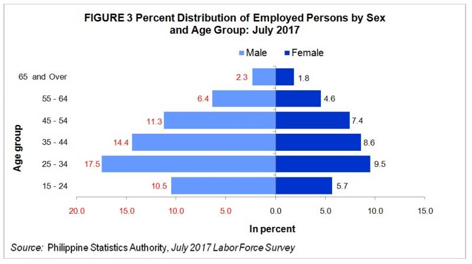
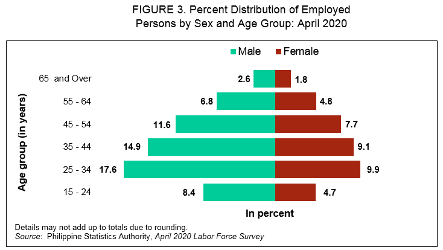
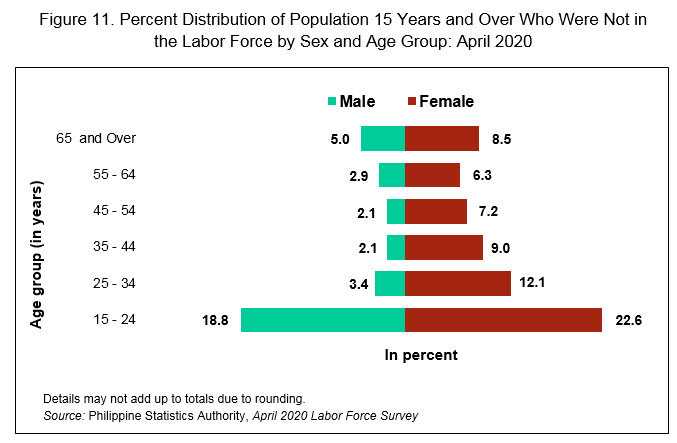

More males are employed than females

Source: psa.gov.ph
In July 2017, males accounted for 62.5% of the 40.2 million employed persons, meaning more than three out of every five workers were men. Meanwhile, females made up 37.5% of the total employed population (Table 3 and Figure 3).
The largest share of employed individuals belonged to the 25 to 34 age group, comprising 27.0% of the workforce. The 35 to 44 age group followed with 23.0%, while the 45 to 54 age group ranked third, representing 18.7% of employed persons.
Seven in Ten Persons Outside the Labor Force Are Women

Source: psa.gov.ph
As of July 2017, approximately 27.6 million people, or 39.4% of the total population aged 15 and over, were not in the labor force (Table 3). This group includes housewives, students, persons with disabilities, and retirees.
Women made up the majority of those not in the labor force, accounting for 69.1% of this group.
In Summary (July 2017):
| Category |
Percentage |
Population Estimate |
| Employed Males |
62.5% |
25.1M |
| Employed Females |
37.5% |
15.1M |
| Employed (Ages 25-34) |
27.0% |
10.85M |
| Employed (Ages 35-44) |
23.0% |
9.25M |
| Employed (Ages 45-54) |
18.7% |
7.52M |
| Not in Labor Force |
39.4% |
27.6M |
| Women Not in Labor Force |
69.1% |
19.08M |
More males are employed than females

Source: psa.gov.ph
In April 2020, men had a higher employment rate than women. Of the estimated 33.8 million employed individuals, 61.9% were males, meaning nearly three out of every five workers were men. In contrast, females accounted for 38.1% of the employed population (Table 3, Figure 3).
When categorized by age, the 25 to 34 age group had the highest share of employed individuals, making up 27.6% of the workforce. This was followed by the 35 to 44 age group at 24.0%, and the 45 to 54 age group at 19.3%
Majority of persons not in the labor force were females

Source: psa.gov.ph
As of April 2020, approximately 32.7 million people, or 44.3% of the total population aged 15 and over, were not part of the labor force. This group includes housewives, students, persons with disabilities, and retirees.
Women made up the majority of those not in the labor force, accounting for 65.8%, while men comprised the remaining 34.2% (Table 3).
By age group, nearly half (41.4%) of those not in the labor force were aged 15 to 24 years. Of this group, 22.6% were females, while 18.8% were males.
In Summary (April 2020):
| Category |
Percentage |
Population Estimate |
| Employed Males |
61.9% |
20.9M |
| Employed Females |
38.1% |
12.9M |
| Employed (Ages 25-34) |
27.6% |
9.3M |
| Employed (Ages 35-44) |
24.0% |
8.1M |
| Employed (Ages 45-54) |
19.3% |
6.5M |
| Not in Labor Force |
44.3% |
32.7M |
| Women Not in Labor Force |
65.8% |
21.5M |
| Men Not in Labor Force |
34.2% |
11.2M |
| Not in Labor Force (Ages 15-24) |
41.4% |
13.5M |
| Females (Ages 15-24, Not in Labor Force) |
22.6% |
7.4M |
| Males (Ages 15-24, Not in Labor Force) |
18.8% |
6.1M |